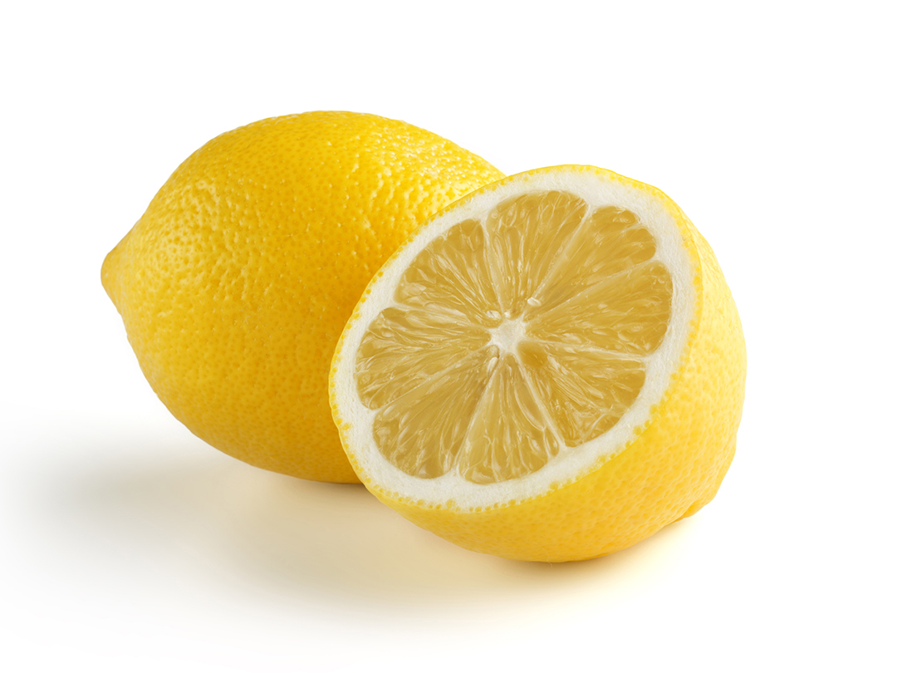

Hazırlanışı
Malzemeler:
1-2 litre su(haşlamak için)
10 adet patates
4 dal taze soğan

1/2 demet maydonoz

2 çay kaşığı tuz
1 çay kaşığı karabiber

1 tatlı kaşığı sumak
1 adet limon suyu

1/3 çay bardağı zeytinyağı
Yapılışı
- Bir tencereye suyu alıp ısıtın. Su ısındıktan sonra patatesleri üzerine ekleyin ve haşlamaya başlayın. Yaklaşık 15-20 dakika sonra bıçağın ucuyla pişme derecesini kontrol edin ve ocaktan alıp suyunu süzün. Soğuması için dinlenmeye bırakın.
- Derin bir kaseye oda sıcaklığında soğuyan patatesleri küp küp doğrayıp içerisine ekleyin.
- Yeşillikler, sumak, karabiber ve tuzu ekleyin.
- Zeytinyağı ve limon suyunu da patates salatasına ilave edin. Güzelce karıştırın.
- Ardından patates salatasını servis edin.
Afiyet olsun!
Navigasyon
- Anasayfa
- Başlangıç
- Kısır
- Amerikan Salatası
- Patates Salatası